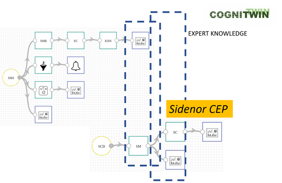

Cognition-based Decision Making Configurator for StreamPipes-based Toolbox (CogConf_ST)
Task 4.4
This service enables an efficient configuration of the decision making module in the StreamPipes-based Toolbox.
It is based on the usage of Complex Event Processing (Siddhi engine) and performs CEP query on received data.
It provides application of complex logic to the “main” outputs of this pipeline (results of various analytical methods).
In addition, this element provides point of connection for this and previous pipeline – Complex Event Processing can be applied on outputs of multiple pipelines connecting them into one complex pipeline.
In the Sidenor pilot it is used for monitoring the degradation of the ladle. Some examples of the configuration.
Test whether there were more than M anomalies in a single heat during time window of length N. For example, if there were more than 10 anomalies in a time window of 5 minutes, raise a warning. (uses output from MEWMA element).
Test whether there were too many anomalies in single heat with same root-cause. For example, if there were more than 100 anomalies with the same root-cause parameter, this can indicate that some sensor or part of machine is faulty and should be checked. (Uses output from MEWMA element.)
During last N heats, cycle is classified as 1 (indicating that the degradation is greater than given threshold) with an increasing probability (certainty). This can indicate that the ladle will soon be unusable and should be monitored closely or even repaired/replaced.
Test whether during the last N heats there were more than M anomalies and that cycle was classified as 1 (indicating that the degradation is greater than given threshold).
Test whether during the last N heats there were more than M anomalies and that cycle was classified as 0 (indicating that the degradation is lesser than given threshold) - extension to the implemented query in pipeline #2.
The service is implemented as a pipeline in StreamPipes.
The model is implemented in Python 3 and uses the free and open-source libraries Keras and TensorFlow.
Sidenor pilot.